Welcome to AFEM’s documentation!¶
A FEM implementation. Created by Arturo Rodriguez
AFEM¶
A FEM implementation.
N dimensional FEM implementation for M variables per node problems.
Using pre implemented equations¶
Avaliable equations:
1D 1 Variable ordinary diferential equation
1D 2 Variable Euler Bernoulli Beams [TODO]
1D 2 Variable Timoshenko Beams [TODO]
2D 1 Variable Torsion
2D 2 Variable Plane Strees
2D 2 Variable Plane Strain
Create geometry (From coordinates or GiD)
Create Border Conditions (Point and segment supported)
Solve!
For example: Test 2, Test 5, Test 11-14
import matplotlib.pyplot as plt #Import libraries
from FEM.Torsion2D import Torsion2D #import AFEM Torsion class
from FEM.Mesh.Delaunay import Delaunay #Import Meshing tools
#Define some variables with geometric properties
a = 0.3
b = 0.3
tw = 0.05
tf = 0.05
#Define material constants
E = 200000
v = 0.27
G = E / (2 * (1 + v))
phi = 1 #Rotation angle
#Define domain coordinates
vertices = [
[0, 0],
[a, 0],
[a, tf],
[a / 2 + tw / 2, tf],
[a / 2 + tw / 2, tf + b],
[a, tf + b],
[a, 2 * tf + b],
[0, 2 * tf + b],
[0, tf + b],
[a / 2 - tw / 2, tf + b],
[a / 2 - tw / 2, tf],
[0, tf],
]
#Define triangulation parameters with `_strdelaunay` method.
params = Delaunay._strdelaunay(constrained=True, delaunay=True,
a='0.00003', o=2)
#**Create** geometry using triangulation parameters. Geometry can be imported from .msh files.
geometry = Delaunay(vertices, params)
#Save geometry to .msh file
geometry.saveMesh('I_test')
#Create torsional 2D analysis.
O = Torsion2D(geometry, G, phi)
#Solve the equation in domain.
#Post process and show results
O.solve()
plt.show()
import matplotlib.pyplot as plt #Import libraries
from FEM.Torsion2D import Torsion2D #import AFEM
from FEM.Mesh.Geometry import Geometry #Import Geometry tools
#Define material constants.
E = 200000
v = 0.27
G = E / (2 * (1 + v))
phi = 1 #Rotation angle
#Load geometry with file.
geometry = Geometry.loadmsh('I_test.msh')
#Create torsional 2D analysis.
O = Torsion2D(geometry, G, phi)
#Solve the equation in domain.
#Post process and show results
O.solve()
plt.show()
Creating equation classes¶
Note: Don’t forget the docstring!
Create a Python flie and import the libraries:
from .Core import * from tqdm import tqdm import numpy as np import matplotlib.pyplot as plt
Core: Solver
Core: Numpy data
Core: Matplotlib graphs
Tqdm: Progressbars
Create a Python class with Core inheritance
class PlaneStress(Core): def __init__(self,geometry,*args,**kargs): #Do stuff Core.__init__(self,geometry) It is important to manage the number of variables per node in the input geometry.
Define the matrix calculation methods and post porcessing methods .. code-block:: python
def elementMatrices(self): def postProcess(self):
The
elementMatricesmethod uses gauss integration points, so you must use the following structure: .. code-block:: python- for e in tqdm(self.elements,unit=’Element’):
_x,_p = e.T(e.Z.T) #Gauss points in global coordinates and Shape functions evaluated in gauss points jac,dpz = e.J(e.Z.T) #Jacobian evaluated in gauss points and shape functions derivatives in natural coordinates detjac = np.linalg.det(jac) _j = np.linalg.inv(jac) #Jacobian inverse dpx = _j @ dpz #Shape function derivatives in global coordinates for k in range(len(e.Z)): #Iterate over gauss points on domain
#Calculate matrices with any finite element model
#Assign matrices to element
A good example is the
PlaneStressclass
Roadmap¶
Beam bending by Euler Bernoulli and Timoshenko equations
2D elastic plate theory
2D heat transfer
Geometry class modification for hierarchy with 1D, 2D and 3D geometry child classes
Transient analysis (Core modification)
Elasticity in 3D (3D meshing and post process)
Non Lineal analysis for 1D equation (All cases)
Non Lineal for 2D equation (All cases)
UNIT TESTING
NUMERICAL VALIDATION
Non Local 2D?
Test index:¶
Test 1: Preliminar geometry test
Test 2: 2D Torsion 1 variable per node. H section - Triangular Quadratic

Test 3: 2D Torsion 1 variable per node. Square section - Triangular Quadratic

Test 4: 2D Torsion 1 variable per node. Mesh from internet - Square Lineal

Test 5: 2D Torsion 1 variable per node. Creating and saving mesh - Triangular Quadratic
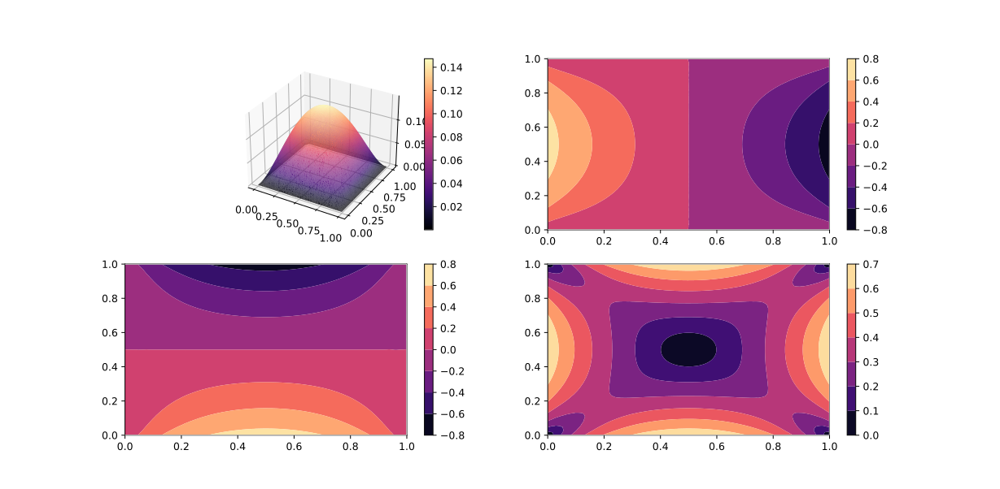
Test 6: 1D random differential equation 1 variable per node. Linear Quadratic

Test 7: GiD Mesh import test - Serendipity elements

Test 8: Plane Stress 2 variable per node. Plate in tension - Serendipity

Test 9: Plane Stress 2 variable per node. Simple Supported Beam - Serendipity

Test 10: Plane Stress 2 variable per node. Cantilever Beam - Triangular Quadratic
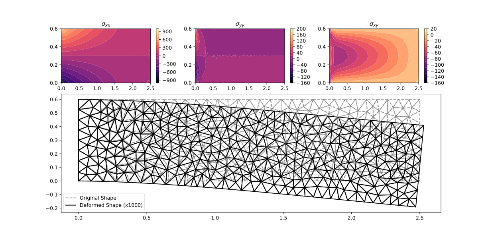
Test 11: Plane Stress 2 variable per node. Fixed-Fixed Beam - Serendipity

Test 12: Plane Strain 2 variable per node. Embankment from GiD - Serendipity

Test 13: Plane Strain 2 variable per node. Embankment - Triangular Quadratic

Test 14: Plane Stress 2 variable per node. Cantilever Beam - Serendipity

Test 15: Profile creation tool. Same as Test 14
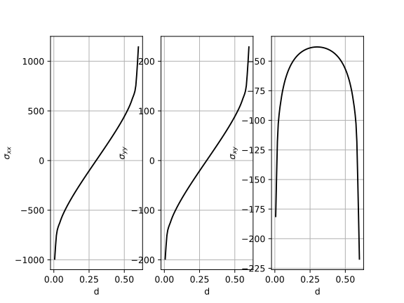
Test 16: Non Local Plane Stress. [WIP]
Test 17: 1D Heat transfer.

Test 18: 2D border elements creation.
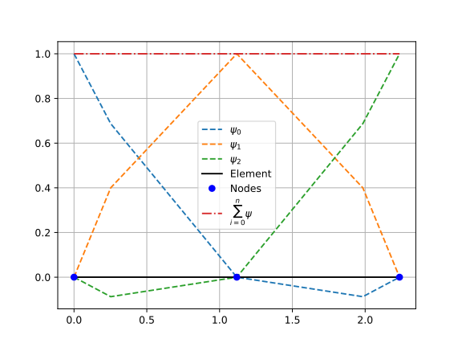
Test 19: Apply loads on segments.
loadOnSegmentmethod on Test 11
Test 20: Reddy’s Example 11.7.1 Ed 3
Test 21: Test 20 with serendipity elements.
Test 22: Test 20 with refined mesh.
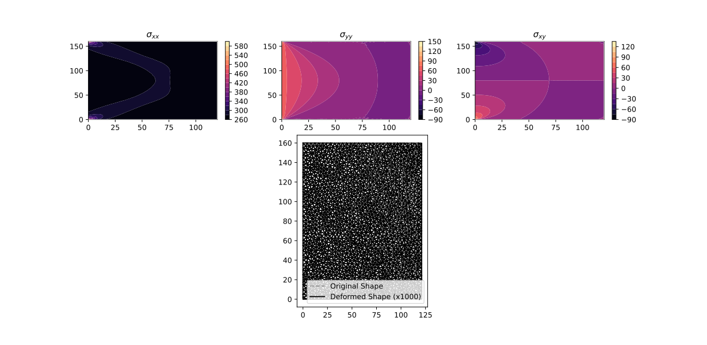
Test 23: Reddy’s Problem 11.1 Ed 3 Plain Strain
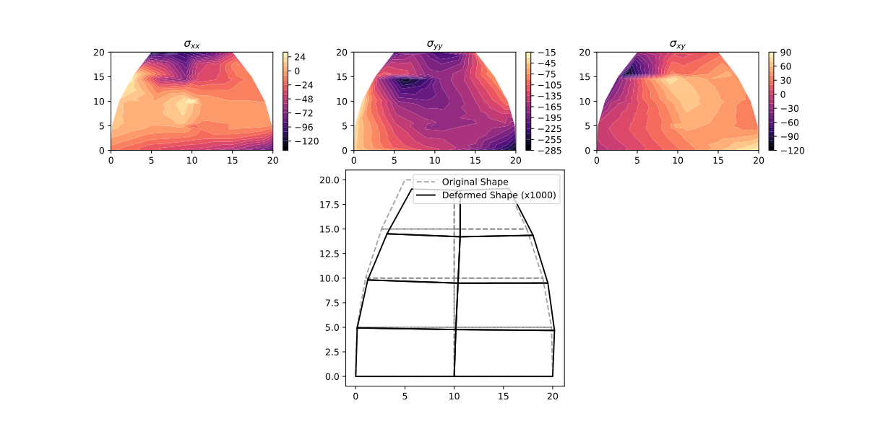
Test 24: Test 23 with refined mesh
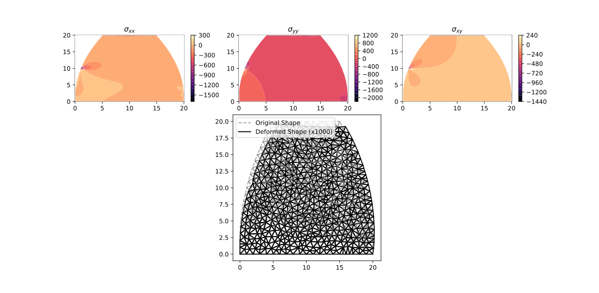
Test 25: Holes concept. With Test 24
 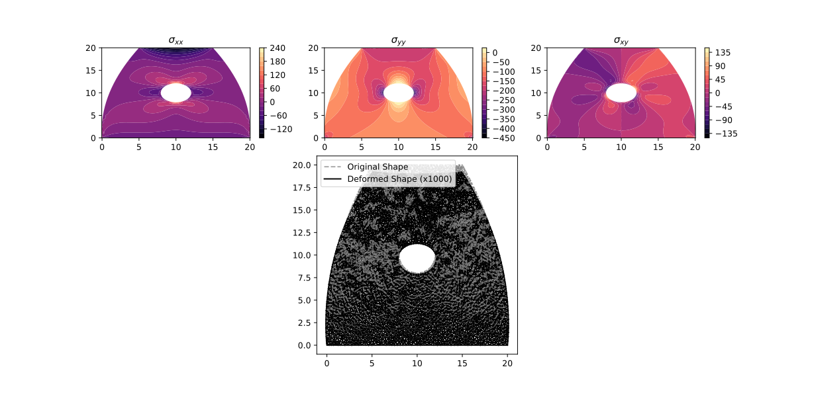
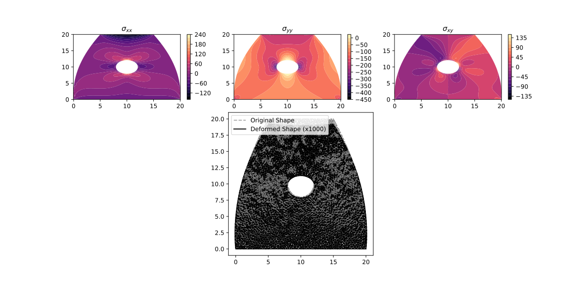Test 26: Fillets concept.
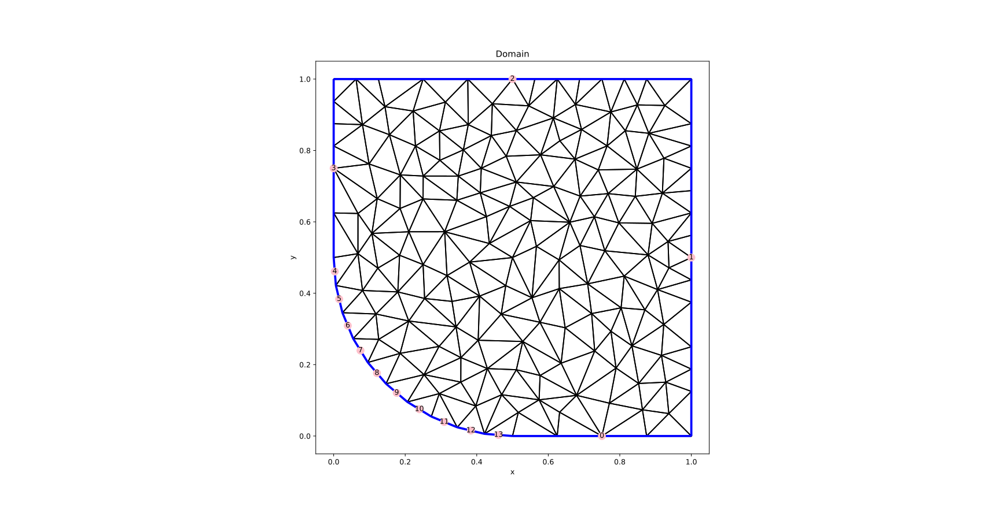 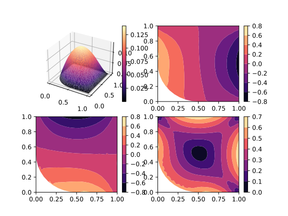
Test 27: Combination of Holes an Fillets, Plane Stress

Test 28: Fillets and Holes mesh files of Test 27
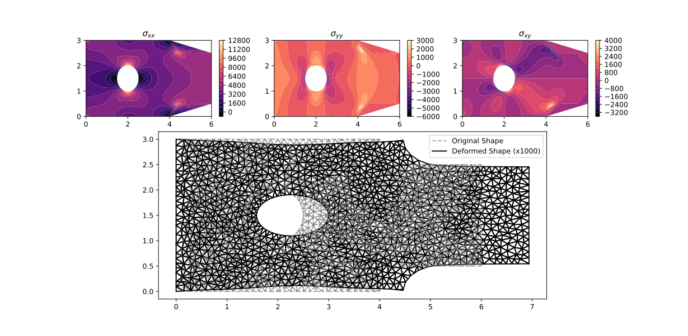
Test 29: Fillets and Holes in Test 13
 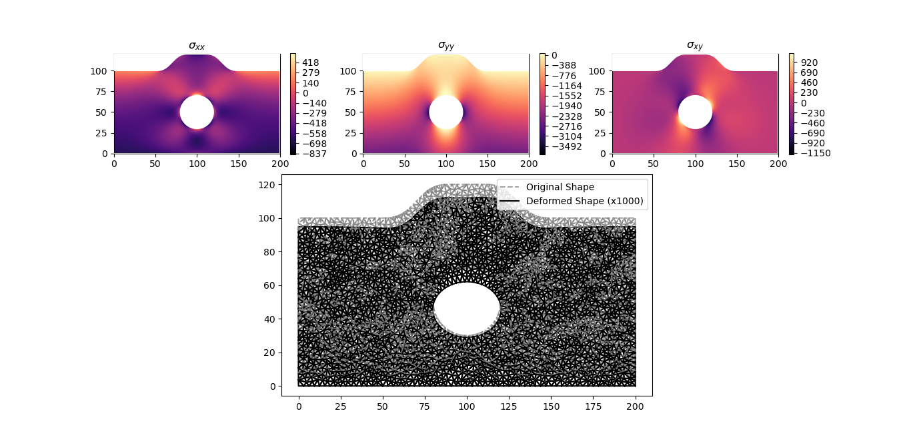
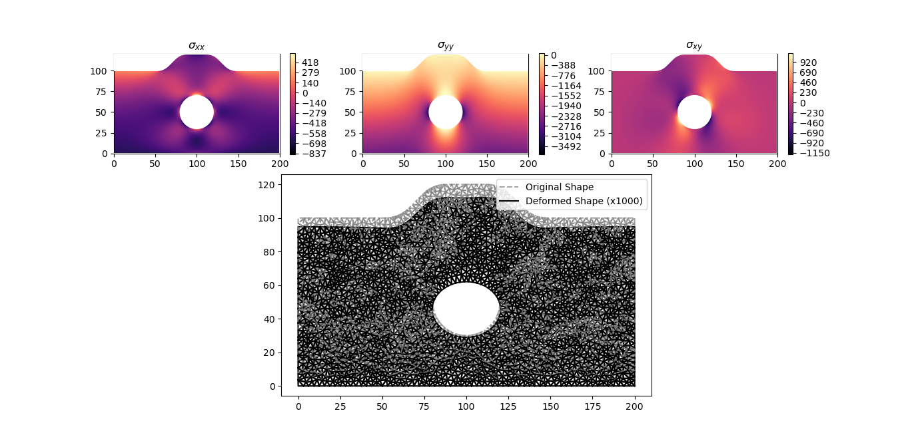
References¶
Reddy. Introduction to the Finite Element Method, Third Edition (McGraw-Hill Education: New York, Chicago, San Francisco, Athens, London, Madrid, Mexico City, Milan, New Delhi, Singapore, Sydney, Toronto, 2006). https://www.accessengineeringlibrary.com/content/book/9780072466850
Jonathan Richard Shewchuk, (1996) Triangle: Engineering a 2D Quality Mesh Generator and Delaunay Triangulator